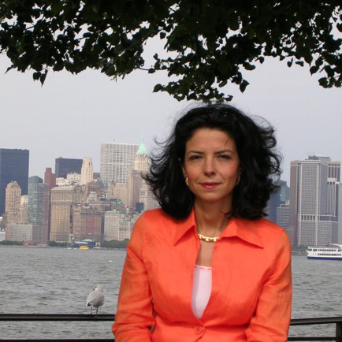

<div class="container">
	<div class="row">
        <div id="speaker-detail" class="col-lg-10 col-lg-offset-1">
            <div class="row">
            	<button title="Close (Esc)" type="button" class="mfp-close">×</button>
                
                <div class="col-md-5 col-lg-5 no-padding">
                    
                </div>
                    
                <div class="col-md-7 col-lg-7">
                    <h2>Amal<span>El Fallah</span></h2>
                    <p class="lead">Professeur à<strong>&nbsp;Université Pierre et Marie Curie</strong></p>
                    <ul class="social list-inline list-unstyled">

                        <li><a href="https://fr.linkedin.com/in/amal-el-fallah-seghrouchni-7459363"><i class="fa fa-2x fa-linkedin-square"></i></a></li>
                    </ul>
                    
                    <div id="content">
                    	<p>Experienced Full Professor with a demonstrated history of working in the research industry. Skilled in Mathematical Modeling, Computer Science, C++, Autonomous agents and Software Design. Strong education professional with Ph.D in Computer Science from the University Pierre et Marie Curie and a Habilitation à Diriger les Recherches (HDR) focused in Computer Science - Artificial Intelligence from University Paris 13. Involved in various international committees for A.I. and Autonomous Agents.</p>
                    </div>
                </div>
            
            </div>
        </div>
    </div>
</div>


